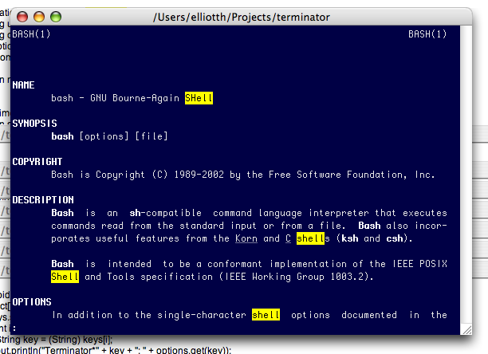
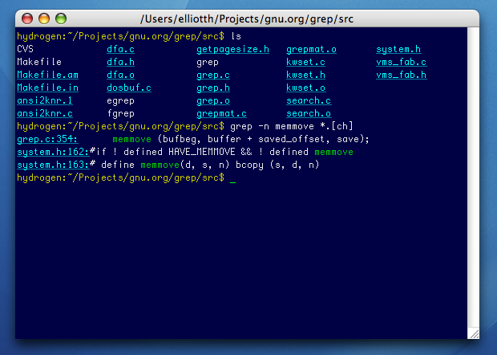

Terminator is a GPL Unix terminal emulator with advanced features not yet found elsewhere, replacing xterm, rxvt, xwsh and friends on X11 systems, and Terminal.app on Mac OS X.
Terminator will run on any Unix with Java 1.4 or later and a C++ compiler.
Here are some of the features unique to Terminator, or which are rare amongst the competition:
Find - Terminator provides you with a find function so you can search for text and regular expressions within your terminal (including the scrollback), highlighting them all, in the style of less(1), and offering quick movement to the next or previous match. As far as we know, the only other terminal emulator with a find function is Apple's Terminal, and ours is better.
Searches stay active until you cancel them, so if you're waiting for some particular output in a great stream of output, this is a really great way to make it blindingly obvious when it appears.
A screenshot of Terminator on Mac OS X, after running 'man bash', and doing a find for '(?i)shell'. Despite the evidence that a pager is running, this is Terminator doing the highlighting — one of the authors uses cat(1) as his pager:

Hyperlinks - Terminator will recognize the names of files, or grep-like addresses consisting of a filename and line number, and automatically turn the text into a link that will open the file in your configured editor. So grep -n output, or svn update output, for example, becomes clickable.
Terminator can also jump to the next/previous link, which is great for quickly scanning voluminous build output.
A screenshot of Terminator automatically providing links to grep(1) matches:

This works by reading your current directory from the window title, so you'll need something like this in your bash(1) start-up scripts:
if [ "$TERM" == "terminator" ] then export PROMPT_COMMAND='echo -ne "\e2;`pwd`\a"' fi
Number reinterpretation - Terminator will recognize numbers in a variety of bases as the current selection, and add informational menu items to the pop-up menu showing the same number in other bases. No more man ascii or resorting to bc(1).
Horizontal Scrolling - Most terminal emulators wrap text when it intrudes upon the right margin. Terminator doesn't - it instead provides a horizontal scrollbar when necessary. This brings clear benefits in terms of readability of program output, or text files sent to the display with cat(1). (We tried both this and Apple-like reflowing of text when you change the window size, and we decided we preferred this. Sadly, we don't have the resources to support two implementations, so reflowing isn't an option; it's gone from the code.)
Multiple Tabs - Like tabbed browsing, only with terminals.
Automatic Logging - Complete logs are automatically generated of all your terminal sessions.
Proper Tab Character Handling - Most terminal emulators will translate tab characters into strings of spaces, which is very annoying if you then try to copy/paste a section of text from your terminal into a text editor. Terminator handles tabs properly, remembering where the tabs are and copy/pasting them as tab characters.
Portability - Written in a combination of Java and POSIX C, Terminator is the best terminal emulator you can run on both Linux and Mac OS, or any other Unix.
Consistent Look and Feel - Terminator will fit in on any platform. It looks perfectly at home on Linux systems, and blends seamlessly into Mac OS X.
Freedom - Terminator is released under the GPL.
We think Terminator is the clear choice for the discerning terminal user. Though originally written for Linux to make up for the fact that no Linux terminal emulator was as good as Mac OS' Terminal, it has now surpassed Terminal in several areas.
The source distribution is here (terminator.tgz), but you'll also need a copy of the library to go with it (salma-hayek.tgz).
Terminator is written almost entirely in Java with a small C++ back-end which runs a process connected to a pseudo-terminal. You will need at least Java 1.4, and should use 1.5 if you can.
Terminator will run fine on Mac OS, KDE, Gnome, or even an old-style X11 window manager like lwm. Now you can use the same terminal emulator everywhere!
We have made great efforts to ensure that Terminator is as easy to run as possible. The native code will automatically be compiled the first time you run Terminator on a new architecture, assuming you have make(1) and g++(1) installed. A single Terminator installation may contain native binaries for a variety of different architectures; this is handled automatically.
Terminator has its own terminfo file. This will be installed in your home directory unless Terminator is able to write to the system-wide terminfo directory. This will only be the case if you run Terminator as root.
If the terminfo file is only installed in your home directory then you will see "terminal is not fully functional" problems when using su(1) to switch to another user (although sudo(1) will work fine).
For best results, on computers where you'll be logged in as root at times, we recommend you install the terminfo file for Terminator in /usr/share/terminfo. The easiest way to do this is to simply run Terminator once as root. From then on, you can run Terminator as your normal user, and use su(1) to become root.
You will also need to ensure that any machines you'll be remotely logging in to also have a copy of the terminfo file installed. If you share a home directory on the local and remote machine, you'll have no trouble. Likewise if someone has run Terminator as as root on the remote machine.
(Note that if you're running Terminator on a remote machine, it probably won't be able to open a window. Nonetheless, it will get far enough to set up the terminfo file. Running Terminator on a remote machine as a matter of course is usually a mistake. You should run Terminator locally and log in remotely.)
If you're not able to run Terminator as root, you can copy the terminfo file to ~/.terminfo/t/terminator on the remote machine (you'll need to mkdir -p ~/.terminfo/t if the directories don't already exist). This is enough on most GNU-based systems, such as Linux; if you still have problems (if 'vi' complains that the terminal is not fully functional), add the following lines to ~/.profile file on the remote machine:
export TERMINFO=~/.terminfo export TERM=$TERM
Terminator will look in ~/.Xdefaults and ~/.Xresources (in that order, with the last-read setting overriding any earlier settings) for X11 resources of class XTerm, Rxvt, or Terminator. This means that by default it will pick up the other programs' settings, but you can have different settings for Terminator if you wish.
Use terminator --help to see all the options, and their values.
Common resources:
Terminator-only resources:
Terminator should use the same colors you usually see in xterm(1) or rxvt(1). In order to resolve color names to RGB values, Terminator will read the file /usr/X11R6/lib/X11/rgb.txt if it exists. Without this file, Terminator only understands colors in the form #rrggbb.
If you don't have any colors configured, Terminator will use built-in defaults similar to SGI's xwsh(1).
The original implementation and documentation was written by Phil Norman. Nearly all of the actual terminal emulation code remains unchanged.
The original idea of having a suitably hackable terminal emulator with which to experiment with advanced features came from Elliott Hughes. Not being married with children, he now takes care of most of the development.
The 'pty' program is based on code from one of the examples in the book "Advanced Programming in the Unix Environment", by W Richard Stevens.
Phil wrote the code that took us from nothing to a more-or-less usable replacement for rxvt on his own between 2004-04-21 and 2004-05-28. Given that he was on holiday for a week during this time, that made roughly a month of development time.
Since then, Terminator has been on the long slog towards Joel's ten years of quality.